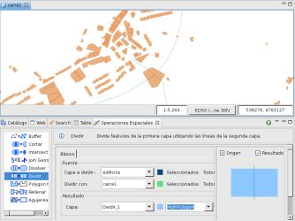
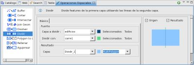
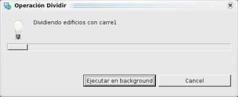

{kind=link}
{kind=link}
{kind=link}

Figura 4. Capa Resultado.
Divide la capa polígono utilizando una capa tipo LineString
La operación dividir toma los features de la capa a dividir y utiliza la capa dividir con para dividir los features.
El resultado de la operación dividir se puede almacenar en una nueva capa, en una existente o en la propia capa a dividir.
En este ejemplo vamos a realizar la operación dividir entre la capa edificios.shp de tipo polígono y la capa carre1.shp de tipo LineString.

Figura 1. Antes de la operación.
Nos dirigimos a la Vista de Operaciones Espaciales, y seleccionamos Dividir en el menú de Operaciones.
Aparecen las opciones específicas de la Operación Dividir.
Debemos indicar los valores de entrada de la operación, como se muestra en la Figura 2:

Figura 2. Definir las capas de entrada y resultante.

Figura 3. Diálogo de progreso.
Una vez que finaliza la Operación, si se creó una nueva capa para almacenar el resultado, ésta será automáticamente añadida al Mapa actual.
La Figura 4 muestra la recién creada Capa (Dividir_1) añadida al mapa, con los Features resultantes de aplicar la división entre las Capa a Dividir y Dividir con.
Figura 4. Capa Resultado.